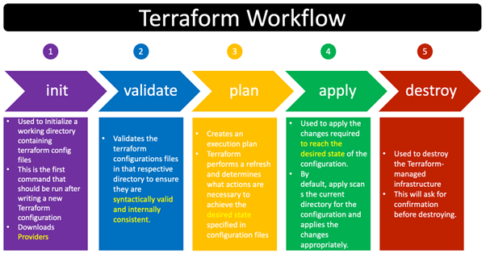

Simplifying AWS Cloud Provisioning with Terraform
In today's cloud-driven environment, managing infrastructure manually can be a hassle—leading to errors and inefficiencies. Terraform, developed by HashiCorp, solves this problem by offering a powerful and declarative Infrastructure as Code (IaC) approach.
✨ What is Terraform?
Terraform is an open-source tool that lets you define cloud infrastructure using a simple, human-readable configuration language called HCL (HashiCorp Configuration Language). With Terraform, developers can build, change, and version infrastructure efficiently and safely.

🛠️ Key Benefits of Using Terraform with AWS
- Automation: Automatically deploy, update, and destroy resources.
- Multi-cloud: Supports AWS, Azure, Google Cloud, and others.
- Version Control: Use Git to manage infrastructure like source code.
- Consistency: Deploy same configuration across multiple environments.
- Error Reduction: Minimize manual intervention and mistakes.
📘 Terraform Workflow
The Terraform lifecycle follows a predictable set of steps. Here's a visual representation:
- terraform init – Initializes Terraform working directory.
- terraform validate – Validates whether configuration files are correct.
- terraform plan – Displays what actions Terraform will take.
- terraform apply – Applies the configuration and provisions resources.
- terraform destroy – Deletes resources created by Terraform.
💻 5 Most Used Terraform Commands for AWS (With Examples)
terraform init
Initializes your Terraform directory. Downloads required plugins and prepares the environment.
terraform initterraform validate
Checks whether your code is syntactically valid.
terraform validateterraform plan
Shows you what changes Terraform will make without actually applying them.
terraform plan -out=tfplanterraform apply
Applies the configuration files and provisions the infrastructure.
terraform apply tfplanterraform destroy
Destroys all resources created by Terraform.
terraform destroy📍 Real-Life Example
Let's say you need to spin up 2 EC2 instances and a secure S3 bucket on AWS. Instead of manually configuring everything via the AWS console, you can write a Terraform file like this:
resource "aws_instance" "example" {
ami = "ami-0c55b159cbfafe1f0"
instance_type = "t2.micro"
count = 2
}
resource "aws_s3_bucket" "example_bucket" {
bucket = "my-terraform-blog-bucket"
acl = "private"
}
Then, you just run:
terraform init
terraform apply
🌐 Conclusion
Terraform isn’t just another tool—it’s a game-changer. Whether you're deploying a complex infrastructure or a basic VM, Terraform makes the process simple, repeatable, and safe. For students and professionals alike, mastering Terraform is a vital step toward cloud expertise.